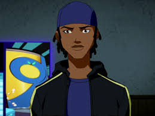

Sono uno sviluppatore web appassionato della creazione di esperienze digitali moderne e interattive. Mi piace lavorare con tecnologie come HTML, CSS, JavaScript, React e PHP. Questo portfolio mostra i miei progetti e il mio percorso nello sviluppo web e software.
Istituto Paul Hankar
Diploma di sviluppatore web
Université libre de Bruxelles
Laurea in Informatica
Université libre de Bruxelles
Laurea in Scienze Farmaceutiche
Istituto Velso Mucci
Economia aziendale
UI/UX Designer — Creazione di design moderni e intuitivi.
Sviluppatore Web — Realizzazione di siti e applicazioni dinamiche.
Sviluppatore Software — Creazione di applicazioni desktop moderne e funzionali.
Sviluppatore in Intelligenza Artificiale — Creazione di modelli IA con
PyTorch e TensorFlow, integrazione API e web scraping.
Sviluppatore Automazione — Creazione di sistemi automatizzati integrati
con Google Calendar, OpenAI, Gmail e altri servizi.
Design e sviluppo No-code:
Linguaggi di sviluppo utilizzati:
Frameworks:
Montaggio video:
1. Sito Web di Viaggi "Living Travel" con react.js come framework usato
Creato con React.js, un sito di viaggi che propone destinazioni agli utenti, mostrando prezzi, offerte e possibilità di prenotazione. Il backend in PHP gestisce le operazioni, come le prenotazioni e l’autenticazione degli utenti per accedere all’applicazione. È inoltre presente un’area admin dedicata alla gestione completa del sito.
🔗 Clicca qui per vedere il progetto "Living Travel
2. Motore di Ricerca Web con Intelligenza Artificiale jarvis AI
Sviluppato con html et css e javascript le API di Google e APi di cohere ai della societa cohere AI che ho migliorato il loro modelo per creare una mia versione chiamata jarvis AI. Include jarvis AI, un intelligenza artificiale capace di navigare sul web e dialogare con l’utente attraverso un’interfaccia di chat, effettuare ricerche sul web e inviare link pertinenti all’utente e capacie di aprire il browser all’utente con il riconoscimento vocale.
🔗 Clicca qui per vedere il progetto
3. Imagine Generator AI
Applicazione IA per generare immagini a partire dal testo dell utente. Backend Python (Torch, Diffusion Pipeline, Pillow) e frontend Streamlit.
4. Sito E-commerce Scarpe
Sito sviluppato con html e css e javascript che propone delle scarpe da vendere online per un mercante di nome zack che va vendita di scarpe
🔗 Clicca qui per vedere il progetto sito E-commerce Scarpe
5. Sito Dedicato alla citta di verduno chiamato Besarito
Realizzato con WordPress per promuovere la città ai turisti e un sito che ho realizzato con il mio amico besar che si trova a verduno.
6. Sito per un ristorante francese chiamato "Les Délicieux Plateau", un progetto portafoglio
in cui presento diversi menù ispirati all’universo gastronomico francese, con specialità
rivisitate e proposte per il mattino, il pomeriggio e la sera.
Il progetto è stato realizzato come compito scolastico per la valutazione, basato su un
ristorante inventato.
🔗 Clicca qui per vedere il progetto di ristorazione "Les Délicieux Plateau"
7. ho sviluppato un gioco di scacchi con html e css e javascript.
🔗 Clicca qui per giocare al gioco di scacchi
8. ho sviluppato un gioco di scacchi con html e css e javascript.
🔗 Clicca qui per giocare al gioco di scacchi
9. Social Network
Creato con React.js,simile a facebook in cui gli utenti possono iscriversi e creare un account e condividre informazioni.
9. ho sviluppato un social network chiamato netveb.
🔗 Clicca qui per testare il gioco di ping pong
12. ho sviluppato un altro gioco di escape game chiamato Labyrinth 2D con html e css e javascript.
🔗 Clicca qui per testare il gioco di escape game Labyrinth 2D
13. ho sviluppato un gioco di Tetris con html e css e javascript.
🔗 Clicca qui per testare il gioco di Tetris Game
13. Ho sviluppato un’intelligenza artificiale chiamata Vision AI, capace di analizzare immagini, descriverle in modo dettagliato e modificarle.
Per questo progetto ho utilizzato il framework Streamlit, che mi ha permesso di creare l’applicazione e integrare le funzionalità dei vari modelli.
Per rendere Vision AI più completa, ho combinato quattro modelli diversi:
Un modello linguistico in grado di comprendere i testi inviati dall’utente, analizzare le emozioni e formulare risposte ragionate.
Un modello visivo avanzato, capace di interpretare le immagini e descriverle in modo accurato e dettagliato.
Un modello visivo più semplice, dedicato alla descrizione rapida delle immagini.
Un modello di orchestrazione, che raccoglie e unifica le informazioni provenienti dagli altri tre modelli, producendo risposte chiare, complete e precise, soprattutto nelle descrizioni e modifiche delle immagini.
Ho inoltre implementato un sistema di autenticazione con username, gestione degli utenti e un’area admin che permette di controllare l’applicazione in modo sicuro e organizzato.
L’obiettivo di Vision AI è quello di avvicinarsi, attraverso l’integrazione di più modelli open-source e l’aggiunta di funzionalità avanzate, all’esperienza offerta da sistemi come GPT, migliorando la qualità dell’interazione con l’utente
🔗 Clicca qui per testare il modelo vision AI
14. Ho sviluppato in questo progetto un modelo chiamato vimeo AI capacie di generare video a partire da imagini e prompt per entrare nella pagina bisogna creare un account e accedere con il login
per construire l app ho usato il framework streamlit per la gestione user ho usato postresql per il database
🔗 Clicca qui per testare per il modelo vimeo AI